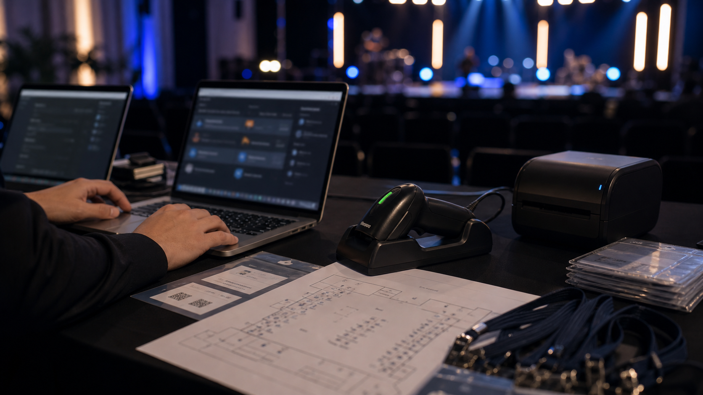

Strategic Communications
Align positioning, messaging, stakeholders, channels, reputation, and execution around one clear direction.
SENZ helps Philippine brands, founders, leaders, and organizations clarify their position, strengthen their message, protect reputation, and build a public presence people can trust.
Each service page explains the purpose, likely scope, audiences, and questions behind a focused SENZ engagement.
Align positioning, messaging, stakeholders, channels, reputation, and execution around one clear direction.
Define the audience, category, promise, proof, differentiation, architecture, and messaging that guide the brand.
Prepare public positioning, media messages, stakeholder communication, reputation strategy, and issue response.
Build a coherent professional identity, narrative, reputation, digital presence, and visibility roadmap.
Plan clearer structure, messaging, proof, user journeys, search foundations, and conversion pathways.
Develop candidate or titleholder positioning, advocacy, interviews, media materials, content, and reputation strategy.
SENZ connects communications, technology, marketing, imaging, physical brand materials, and public relations so clients can begin with one clear direction.
Original sound, music production, songwriting, sonic identity, and audio-led storytelling.
View divisionWebsites, digital products, client portals, automation, and practical online experiences.
Explore digital productsCampaign strategy, audience growth, content systems, promotion, and measurable action.
View divisionPhotography, video, visual direction, post-production, and organized brand asset libraries.
View divisionBranded kits, merchandise, event materials, and coordinated physical brand experiences.
View divisionPublic positioning, media strategy, messaging, reputation, stakeholder communication, and issue response.
View divisionA focused strategic engagement for a brand, founder, leader, or organization preparing to launch, relaunch, enter a bigger market, or repair a confusing public presence.
Instead of buying disconnected design, content, PR, and website services, you begin with one direction that guides all of them.
Our product directions include guided image workflows, AI-enabled digital assistants, portals, event systems, and other custom tools. Product development is ongoing, and current availability is confirmed during inquiry review.
A guided digital photography workflow for organized requests, review, portrait enhancement, and brand-ready delivery.
Learn about FotoLabAn AI-enabled guide that explains services, answers common questions, gathers context, and directs people to the right human contact.
Explore Digital Assistants
Client portals, event systems, consent-based digital representatives, and music platforms prepared around a defined use case.
View the product catalogQuestion-led guidance for people deciding whether they need branding, PR, marketing, personal branding, reputation support, or a stronger website.
Understand the decisions behind positioning, audience, differentiation, proof, messaging, and identity.
Read the answer →Learn which discipline solves which problem and when the three should work together.
Read the answer →Build credibility through real expertise, point of view, proof, boundaries, and consistent visibility.
Read the answer →Preparing to launch, reposition, attract stronger clients, or enter a more competitive market.
Building credibility, refining public identity, or communicating through a high-visibility moment.
Needing one coherent story across campaigns, community work, digital platforms, and public communication.
We examine the goal, audience, current perception, existing assets, and constraints before recommending work.
We establish positioning, narrative, priorities, deliverables, and the standard every output must follow.
We develop the agreed messaging, creative direction, content, PR, or digital work within the approved scope.
Tell SENZ what you are building, changing, launching, or protecting. We will recommend the strongest next step.
Request a Consultation